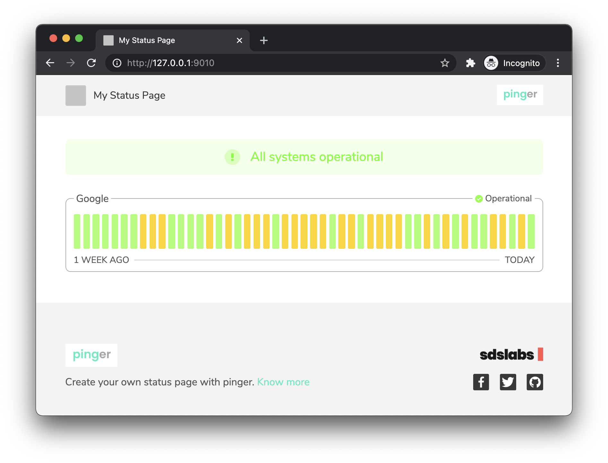

Pinger is an uptime and status monitoring application. It is an open-source implementation of platforms used to create status pages. Unlike other alternatives, Pinger can be deployed to create a standalone status page from a config file as well as a complete platform to manage users, checks, pages, alerts, etc.
- Issue Tracker: https://github.com/sdslabs/pinger/issues
- Source Code: https://github.com/sdslabs/pinger
Note: Pinger is currently being developed actively. If you would like to contribute to the project, head over to the repository hosted on Github. Contribution guidelines are available in this documentation here.
License
Pinger, all the source code, is released under the MIT License.
Credits
Getting Started
The Pinger binary is all you need to create your own status page.
Installing
Here are several ways you can install Pinger.
Downloading the binary
You can download the binary from our Github releases. Everything is packaged inside the binary, including, the frontend.
Docker
You can directly use the docker image to run Pinger. Use the docker image hosted on Github packages.
Building from source
You can head over to the contribution section of this documentation to see how to build the project from scratch.
Ping Google
Here, we'll deploy a status page using Pinger in the standalone mode, i.e., without complex deployment of the complete platform. But before that we need to learn how to run checks.
What is a Check?
Check, in hindsight, is a request sent to specified target which has its response verified through some conditions which determine whether the request returned valid response or not. These conditions might vary depending upon the protocol of the request. For example, an HTTP request can be checked from the status code received in the response.
Writing the configuration file
For specifying the checks in the status page, we need to write a config file. We will start by writing an ICMP check for google.com. This will be equivalent of running the command:
$ ping google.com
The config file can be written in any of the following formats – YAML, TOML
or JSON. To create the status page we will be using the agent command which
takes the default file path to be ./agent.yml so create a file with the
same name.
# agent.yml
# We need to tell Pinger to run the agent in standalone mode since the
# default behaviour is something else.
standalone: true
# Configuration for where metrics are stored.
metrics:
backend: log # We will just log them on the console for now
# Interval after which metrics are logged into database.
interval: 5s
# All the checks we need to run.
checks:
- id: ping-google # unique ID
name: Ping Google # human-readable name
interval: 3s # Ping every 3 seconds
timeout: 0.5s # Timeout if it takes longer than half a second
input:
type: ICMP # Protocol
output:
type: TIMEOUT # Condition for success/failure
target: # Target to hit/request
type: ADDRESS
value: google.com
Running the check
Now that we have the config file ready, we can launch our agent to ping the Google servers. Assuming you have the Pinger binary, run the following command:
$ path/to/pinger agent
INFO[0005] metrics for check (ping-google) Ping Google check_id=ping-google check_name="Ping Google" duration=79.065304ms is_successful=true is_timeout=false start_time="2020-12-29 22:28:09.313387 +0530 IST m=+0.024071573"
INFO[0005] metrics for check (ping-google) Ping Google check_id=ping-google check_name="Ping Google" duration=43.521461ms is_successful=true is_timeout=false start_time="2020-12-29 22:28:12.314517 +0530 IST m=+3.025195953"
INFO[0010] metrics for check (ping-google) Ping Google check_id=ping-google check_name="Ping Google" duration=49.180263ms is_successful=true is_timeout=false start_time="2020-12-29 22:28:15.318509 +0530 IST m=+6.029181599"
INFO[0010] metrics for check (ping-google) Ping Google check_id=ping-google check_name="Ping Google" duration=500ms is_successful=false is_timeout=true start_time="2020-12-29 22:28:18.318521 +0530 IST m=+9.029187048"
You will get an output similar to the one above. Each 5 seconds we get logs for the metrics that we collected. We can also see the start times for each log is 3 seconds apart, which is what we set for our check. Finally, the last check is considered as a failure, given it took more than the set limit of half a second (or 500 milli-second).
Storing Metrics
Currently we only logged the metrics on the console. In long term, we would want to persist the metrics in a time-series database. Let's see how.
Setting up TimescaleDB
Pinger supports TimescaleDB as of now. Timescale is a PostgreSQL extension for storing time-series data.
Using the instructions here we can set it up. For this tutorial we can use Docker to spawn a container which is Timescale ready.
$ docker run -d --name timescaledb -p 5432:5432 \
-e POSTGRES_PASSWORD=password timescale/timescaledb:2.0.0-pg12
This will start a PostgreSQL instance on :5432 with Timescale installed,
the user postgres having password password.
Before we configure our storage, we should create a database to store the data in.
# This step is just to interactively exec into the container.
# If Timescale was set up natively into the system, it is not required.
$ docker exec -it 7e13ffbb3612 /bin/bash
# Open the postgres shell
$ psql -U postgres postgres
# Create a database named `pinger`
$ CREATE DATABASE pinger;
# List databases and verify that it is created
$ \l
List of databases
Name | Owner | Encoding | Collate | Ctype | Access privileges
----------------+----------+----------+------------+------------+-----------------------
pinger | postgres | UTF8 | en_US.utf8 | en_US.utf8 |
postgres | postgres | UTF8 | en_US.utf8 | en_US.utf8 |
template0 | postgres | UTF8 | en_US.utf8 | en_US.utf8 | =c/postgres +
| | | | | postgres=CTc/postgres
template1 | postgres | UTF8 | en_US.utf8 | en_US.utf8 | =c/postgres +
| | | | | postgres=CTc/postgres
(4 rows)
Now that we have created our database, we can configure the agent to use it.
Configuring storage backend
Now, we can update our config file replacing the log metrics backend with the timescale instance.
# agent.yml
# ...
# The new metrics configuration should look like this
metrics:
backend: timescale
host: 127.0.0.1
port: 5432
username: postgres
password: password
db_name: pinger
ssl_mode: false # Let's just keep it off for now
# ...
That's it. We can restart our agent and see metrics being stored into the database.
$ path/to/pinger agent
Now we can change the database from Postgres shell and see if metrics were actually collected into the database.
$ \c pinger
You are now connected to database "pinger" as user "postgres".
$ SELECT * FROM metrics;
check_id | check_name | start_time | duration | timeout | success
-------------+-------------+-------------------------------+-----------+---------+---------
ping-google | Ping Google | 2020-12-29 19:11:06.926541+00 | 72592580 | f | t
ping-google | Ping Google | 2020-12-29 19:11:09.931472+00 | 116203210 | f | t
ping-google | Ping Google | 2020-12-29 19:11:12.930745+00 | 54831874 | f | t
ping-google | Ping Google | 2020-12-29 19:11:15.930645+00 | 39025993 | f | t
(4 rows)
You should see something like above.
Hurray! We have successfully set up a persistent storage backend for our metrics.
Deploying a Status Page
Deploying a status page is quite easy. We just need to set a boolean equal
to true, and set a couple other variables.
Configuration
Add the following to the configuration file.
# agent.yml
# ...
page:
deploy: true
allowed_origins: ['*'] # For now allow every origin
name: My Status Page
Seeing metrics on browser
Open up your browser and visit http://127.0.0.1:9010/ and you'll be greeted by a beautiful status page displaying metrics for your check.

Similarly, we can add more checks to our config, and they'll magically appear on the status page. We can also configure the logo and favicon of the status page. Use this config reference on how to do it.
We have finally created a status page, and it was super easy. Let's continue this journey with one of the coolest features – alerts.
Mail on Check Failure
Pinger can send alerts when a check fails, or when a check comes back from the dead.
Updating the check
Previously we set a timeout for 0.5s which rarely timed out. Let's change
it to 0.1s to encounter more failures.
# agent.yml
# ...
checks:
- id: ping-google
name: Ping Google
interval: 3s
timeout: 0.1s
input:
type: ICMP
output:
type: TIMEOUT
target:
type: ADDRESS
value: google.com
# ...
Let's run the check and see if we encountered any failures:
$ path/to/pinger agent
After a few seconds, let's query our database for metrics.
# In the postgres shell
$ SELECT * FROM metrics;
check_id | check_name | start_time | duration | timeout | success
-------------+-------------+-------------------------------+-----------+---------+---------
...
ping-google | Ping Google | 2020-12-29 19:58:54.686244+00 | 43848273 | f | t
ping-google | Ping Google | 2020-12-29 19:58:57.686358+00 | 100000000 | t | f
ping-google | Ping Google | 2020-12-29 19:59:00.685532+00 | 45252482 | f | t
ping-google | Ping Google | 2020-12-29 19:59:03.682839+00 | 44708297 | f | t
ping-google | Ping Google | 2020-12-29 19:59:06.681564+00 | 100000000 | t | f
ping-google | Ping Google | 2020-12-29 19:59:09.683893+00 | 73249643 | f | t
...
Looks like we did encounter a few failures. Amazing. Let's set up an alert now.
Adding sender's information
We need to inform Pinger about the account from where to send the emails. This means you need to provide an email and password in configuration file. I'll be using my personal Gmail account for this.
# agent.yml
# ...
alerts:
- service: mail
host: smtp.gmail.com # Since I'll be using a Gmail Account
port: 587
user: <email>
secret: <password>
Replace the <email> and <password> with your email account and password
respectively.
Note: You might need to turn on Less Secure App Access in your Google account security settings.
Once done, we can add a mail alert to our check.
Setting alert for the check
In the check configuration, we need to add what alerts are required to be sent.
# agent.yml
# ...
checks:
- # ...
alerts:
- service: mail
target: <email> # For now just send the mail to yourself
# ...
We can now start our agent and see if we get any mail.
Checking mails
Start the agent again and look for any new mails from yourself.
$ path/to/pinger agent
Open up your mail, and you'll see one like this:

TODO: An email is sent each time the agent is re-started. Rather, what should happen is, we should fetch the previous state, if any, from the database and then see if we want to alert the user.
Architecture
Note: This document also acts as a guideline for components being developed.
To understand how Pinger works internally, first, we need to understand exactly what Pinger does. We will dive into all the components and understand various aspects and how the deployment can be scaled for all of them.
Key Terms
Before we begin with the explanation, let's get familiar with some terms that might be frequently used:
- Check: Anything that can be pinged. Say, pinging google.com using HTTP protocol and checking for status code 200.
- Metric: Result of a ping. Whether google.com returned status 200 in reasonable time or not.
- Controller: Something that runs a specific task again and again at regular intervals of time.
- Manager: Manages multiple controllers together and collects statistics from each of them.
- Page (or Status Page): A collection of various checks and their corresponding metrics.
Overview
Pinger will typically be deployed in one of the two modes:
- Standalone: An agent deployed on a single node to execute checks and collect metrics. A status page can be deployed as well. Everything is configured via a configuration file.
- Complete Application: Includes user auth, a dedicated dashboard to manage checks, pages, etc. Supports distribution of load over multiple nodes. Comprises multiple components that we will understand in this section.
Note: In this section we will mainly focus on the architecture of the complete application, since, standalone mode is simply one component, the agent, interacting with a database. Anyways, we will still go into depth of agent which will give you a better overview of how standalone mode actually works.
A typical user would create their account, create a few checks, and then create status pages comprising those checks. Creating a page, or adding an incident to a page is not a complicated task, rather a simple CRUD operation. The difficult part is creating a check. That's because once a check has been created in the database we also need to execute it. A check is like a cron job that keeps on running forever at regular intervals. We would usually want to distribute the load of checks on various nodes, so, separating this component makes sense. This component is called an agent.
There can be multiple agents distributed across various nodes, and hence, we would need a central entity to balance the load among the agents. The central organizer is responsible for distributing checks among the various agents.
We also need an API server to interact with the user dashboard, or what we call, a client. An app server does exactly that.
Flow of a request
Let's take the example of creating a check. Client requests the app server, which inserts the check into app database. As we remember, inserting into the database isn't enough for a check. We need check to run, indefinitely. One choice could have been to just spawn a controller for the check. The problem would be that we couldn't have been able to scale or distribute checks over multiple nodes. So what we do instead is keep dedicated agents on multiple nodes, which in hindsight, are just a wrapper around a manager of controllers for checks.
We want things to be atomic, i.e., checks should be assigned to agents when created in the database. We also need to balance the load between all the nodes and assign checks accordingly. Both the aforementioned reasons result in an independent entity which can accept new checks from the database and assigns them to the agent. It's the central organizer.
We also need to store the metrics. Usually the database we need to store metrics and application data would be different for two reasons:
- We would store metrics in a time-series database and not every general purpose database supports high performance time series queries.
- We want to scale the metrics database much differently than the app database.
So an overview of our deployment would look something like:

We'll now dive into each component individually to analyse how they function.
Contributing
Note: This guide is for developers who want to make changes to the Pinger codebase. If you want to create your Pinger plugin, there's a completely different section dedicated for it.
Prerequisites
These include some tools like the Go compiler and time series database for storing metrics.
Build dependencies
Before beginning make sure you have all the required tools installed:
- Go
v1.15.x - Protobuf for Golang
protocv3.14.xprotoc-gen-gov1.25.xprotoc-gen-go-grpcv1.0.x
- Golang CI Lint
v1.32.2 - mdBook
v0.4.4
Runtime Dependencies
Externally, Pinger only relies on databases.
- PostgreSQL
v12 - Timescale
v2.0
Make Pinger
Before we can do anything, ewe need to fetch the source code present in this Github repository.
# If you use SSH
$ git clone git@github.com:sdslabs/pinger.git
# or with HTTP
$ git clone https://github.com/sdslabs/pinger.git
$ cd pinger
Pinger uses GNU Make. We can run a simple make command to build the Pinger binary as well as the documentation.
Note: In most of what we will learn in this section of documentation, everything is done using
make. If you're ever stuck, runmake helpand hopefully you'll find something useful.
$ make all
The above command might take a while but at the end you should have an
executable called pinger and documentation built in the docs/book
directory.
We should take a deeper look into the build process and understand how
to use the Makefile for our development flow.
Build Process
We won't be running make all everytime. Since the command builds all the
components, it would take longer than usual when changing a couple lines in
one part of the code.
Currently we need to build three things:
- Binary
- Docker Image
- Documentation
Let's take a look at both of them individually.
Binary
The binary packs all the static files, including the CSS and JavaScript
files, required for the frontend. The static directory in root of the
repository is home to all the content packed inside the binary. There is
some preprocessing required for packing the static content into the
binary. This is done using the make static command. This essentially
generates a file called pkg/util/static/resource.go which contains all
the content in a compressed format.
Once we have our resources ready, we can build the executable using the
make build command. We have VERSION flag for setting the version of
the binary. The deafault version is set to dev. Hence, the workflow can
be:
# If there's a change in `static` dir
$ make static
# Building the binary
$ make build VERSION=1.0.1
Once the static directory is large enough, it's going to take a while to
generate the resource.go. For this we have the DEBUG flag that can be
set once while building. A binary built in debug mode takes the static
content directly from the file system and is not required to be packaged
inside the executable.
There are other advantages of building binary in debug mode that you'll learn while working on the project. For now, we can use the following to speed up our builds:
# Note that `make static` is not required now.
$ make build DEBUG=on
Note: This does pose the constraint that any Pinger command has to be executed in the repository's root directory. This shouldn't be an issue while developing.
Protobuf
When making changes to a .proto file, we need to compile it into the
equivalent Go code. These generated files (*.pb.go) need to be committed.
$ make proto
Docker Image
Dockerfile for the image is present in the root directory. To build the
image, use make docker command. This generates an image with tag –
pinger:dev. To change the tag, we can use the TAG option for make
command.
$ make docker TAG="pinger:v1.2.3"
Note: In case of docker image, version is extracted from the tag. For example: in the aforementioned case, version of the binary will set to
v1.2.3.
Documentation
Documentation is not (yet) packaged into the binary. We currently host it
using Github Pages. We use
mdBook as the documentation
framework. Make sure you have that installed in your $PATH.
You can build the documentation using make docs command. This generates
the documentation in docs/book directory. While developing you might
require to watch the docs directory. We can again use the DEBUG=on
option in that case.
# To build the documentation
$ make docs
# Builds the documentation, watches for changes and serves on :3000
$ make docs DEBUG=on
Submitting a Pull Request
These are a few guidelines that need to be followed in-order to make changes in the main repository.
Pre-commit
There are a few things to take care of before committing your changes.
Vendoring
All the dependencies in our repository are vendored. All the dependencies
are listed in go.mod file and are maintained in the vendor directory.
When updating/adding/deleting a dependency, run the following to keep the
vendor up-to-date:
$ make vendor
This will cleanup unused dependencies from go.mod as well as add new
dependencies to vendor.
Lint
We use golangci-lint to lint our code. Each
commit should pass all the lint checks. To ensure that it does, use the
make lint command. Many times, these errors might be related to
formatting of the code. These are usually auto-fixable. make fmt fixes
all the errors that might be resolved automatically.
# To check for linting errors
$ make lint
# To fix auto-fixable errors
$ make fmt
Other checks
Apart from the fact that the code should build successfully, we need to take care of following:
- Ensure that you have compiled any protobuf that may have been updated.
- The Docker image should be built successfully as well.
Commits
Break only logical changes into multiple commits. Commits such as "fix typo" or "address review commits" should be squashed into the one logical commit. Each commit should individually pass tests and lint check No separate commit should be made to fix these.
Commit Messages
Each commit message consists of a header, a body and a footer. The header has a special format that includes a scope and a subject:
<scope>: <subject>
<BLANK LINE>
<body>
<BLANK LINE>
<footer>
Any line of the commit message cannot be longer 76 characters! This allows the message to be easier to read on github as well as in various git tools.
Scope
The scope could be anything specifying place/context of the commit change.
When making changes to Go code, this will most likely be the package name
where the changes are made. For documentation changes scope will be docs
and for UI changes scope will be ui.
Note: Scope should not be capitalized.
docsshould not be spelledDocs.
Subject
The subject contains succinct description of the change:
- Use the imperative, present tense: "change" not "changed" nor "changes".
- Do capitalize first letter.
- Add a dot (.) at the end.
Body
The body should include the motivation for the change and contrast this with previous behavior. Just as in the subject, try to use the imperative, present tense: "change" not "changed" nor "changes", though, this rule is not enforced for the body.
Footer
The footer should contain any information about Breaking Changes and is also the place to reference issues that this commit Closes.
An example of a good commit message would be:
exporter: Update timescale exporter to use Gorm v2.
Previously timescale exporter used Gorm v2 which did not support batch
insert resulting in raw SQL queries. Gorm v2 now includes batch insert,
hence, the same is used to refactor the exporter queries.
Closes #123
Signed-off-by: Contributer <example@contributor.com>
Pull Request
Pull requests follows same guidelines as mentioned for the commit messages. The title should give a clear idea of what it is about, followed by a descriptive body and should mention what issue it resolves (if any).